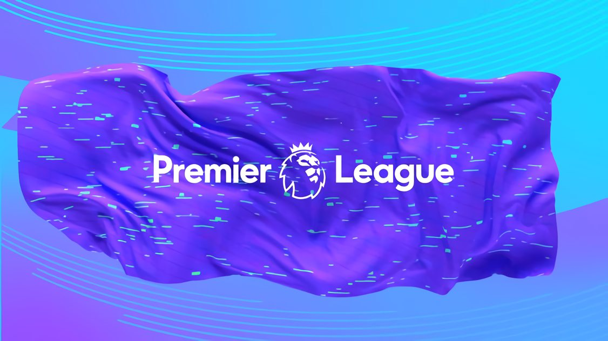

Historia de la Premier League

Para muchos la mejor liga del mundo
A continuacion conoceremos los maximos campeones
y goleadores que tiene esta hermosa liga
La Premier League, también conocida en Inglaterra como The Premiership, es la máxima categoría del sistema de ligas de fútbol de Inglaterra. Comenzó a disputarse en la temporada 1992-93.
La Premier League es considerada una de las cinco grandes ligas europeas junto con la Primera División española, la Serie A italiana, la Bundesliga alemana y la Ligue 1 francesa.
A lo largo de su historia siete clubes han resultado campeones, siendo el Manchester United el equipo más laureado con trece campeonatos. Chelsea, Arsenal, Manchester City, Blackburn Rovers, Leicester City y Liverpool completan el resto de títulos de las veintinueve temporadas del campeonato.
- Maximo ganador de liga: Manchester united
- Maximo goleador historico: Alan shearer con 260 goles
- Maximo ganador de copas: Arsenal
- Máximo goleador extranjero: Sergio "Kun" Aguero con 184 goles